11/08/2024 — Các điện tâm đồ liên tiếp khi đau ngực: đến lúc nào bạn sẽ kích hoạt phòng thông tim?
Bản dịch tiếng Việt của bài "Serial ECGs for chest pain: at what point would you activate the cath lab?" – Dr. Smith’s ECG Blog. Giữ nguyên toàn bộ 14 hình ảnh của bản gốc.
Tác giả: Jesse McLaren
Một người 75 tuổi khỏe mạnh xuất hiện đau ngực mức 7/10 kèm
vã mồ hôi và buồn nôn, khởi phát khi gắng sức nhưng kéo dài dai dẳng. Dưới đây là
điện tâm đồ đầu tiên do nhân viên cấp cứu ngoài viện ghi sau 2 giờ đau ngực, được máy
đọc là “có thể thiếu máu cục bộ thành dưới”. Bạn nghĩ gì?

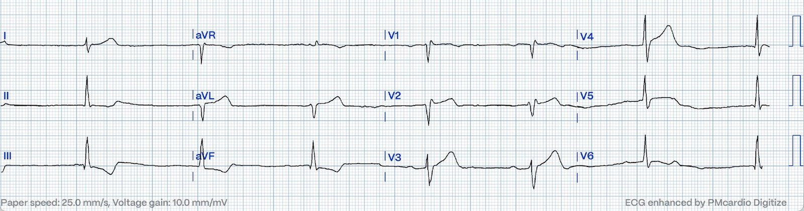
Có sự cạnh tranh giữa nhịp chậm xoang và nhịp
bộ nối, ngoài ra dẫn truyền bình thường, trục lệch phải giới hạn, tăng tiến sóng R
và điện thế bình thường. ST chênh xuống/sóng T đảo ngược (STD/TWI) thành dưới mà máy thấy là thay đổi soi gương
với sóng T tối cấp kín đáo ở các chuyển đạo bên cao, đi kèm sóng T tối
cấp ở V3-4, ST chênh lên (STE) ở V4 và đoạn ST dạng lồi ở V5. Dù STEMI âm tính,
điện tâm đồ này vẫn chẩn đoán tắc LAD đoạn gần.
Bệnh nhân vẫn
còn đau ngực, nên nhân viên cấp cứu ngoài viện ghi thêm một điện tâm đồ 10 phút sau:

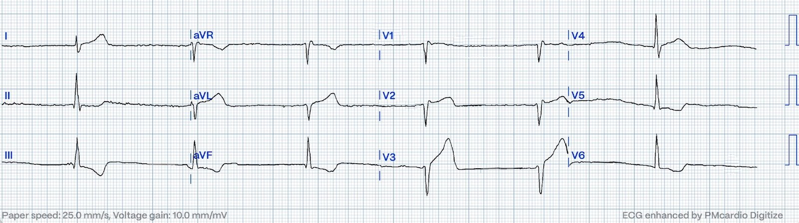
Có thay đổi động (dynamic), với mất sóng R, STE mới
và sóng T lớn hơn ở V3, sóng T nhỏ hơn ở V4 và giờ có STD ở V5-6. Máy báo
STEMI (nhưng chỉ vừa đủ tiêu chuẩn STEMI, nếu có đủ) và bệnh nhân được
đưa tới khoa cấp cứu (ED):
Khi đến nơi 20 phút sau, cơn đau đã giảm xuống
1/10 sau khi dùng aspirin, và bệnh nhân được ghi lại điện tâm đồ lúc phân loại (triage):

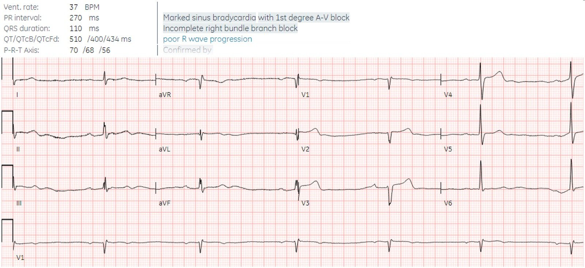
Lúc này đoạn ST và sóng T đã bình thường hóa, và
bất thường duy nhất là nhịp chậm xoang và mất sóng R. Nếu đứng riêng
thì điện tâm đồ này không cho thấy OMI, nhưng nối tiếp các điện tâm đồ trước viện, nó cho thấy LAD đã tái tưới máu
tự phát. Không rõ các điện tâm đồ trước viện đã được xem hay bị bỏ sót ở
khoa cấp cứu. “STEMI thoáng qua” (transient STEMI) thường được xử trí như NSTEMI với chụp mạch vành trì hoãn,
điều này rất nguy hiểm.
Bác sĩ cấp cứu yêu cầu ghi các điện tâm đồ liên tiếp (serial ECGs) mỗi 15
phút:

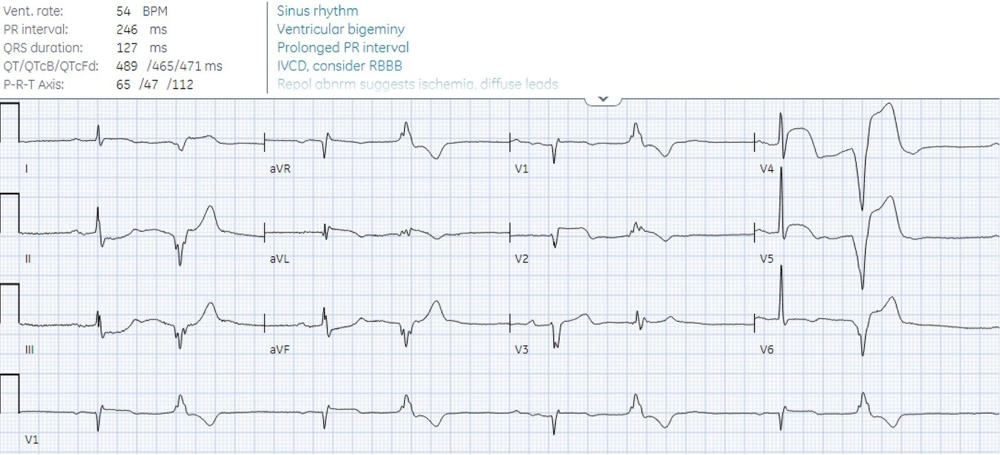
Có nhịp xoang với PVC nhịp đôi, cùng với
tắc lại LAD đoạn gần. Ở các nhát dẫn truyền từ xoang, ta thấy STE ở
aVL kèm STD soi gương thành dưới, và STE ở V2 và V4-V5 (đạt tiêu chuẩn STEMI
nhưng bị máy tính bỏ sót). Ta cũng thấy OMI ở các PVC, bao gồm
STE đồng hướng kín đáo ở V2 và STE ngược hướng quá mức rõ ràng ở
V4-5 (cả hai đều có STE>25% sóng S đi trước).
Điều này bị bỏ sót và một điện tâm đồ khác được ghi 15 phút
sau đó:

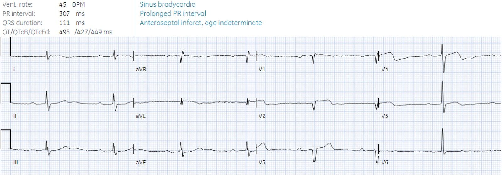
Các PVC đã biến mất và ST/sóng T đã cải thiện,
kèm phần cuối sóng T đảo ngược ở V4 – cho thấy tái tưới máu tự phát
một lần nữa.
Năm phút sau, bệnh nhân xuất hiện nhịp QRS
rộng:

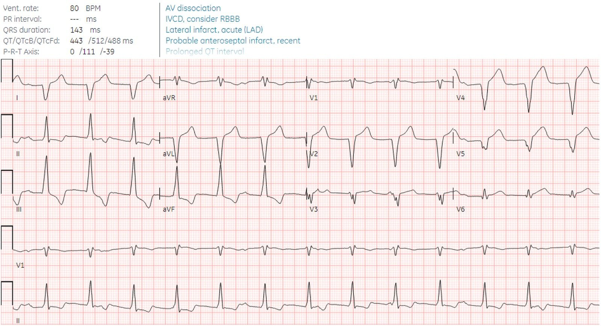
Nhịp QRS rộng đều với tần số bình thường, có phân ly
nhĩ thất, cho thấy nhịp tự thất gia tốc (AIVR), mà trong bối cảnh đau ngực đã hết thì
là thêm một dấu hiệu nữa của tái tưới máu tự phát.
Lúc này bác sĩ cấp cứu yêu cầu hội chẩn
tim mạch khẩn. Trong ghi chú hội chẩn không hề nhắc đến việc thiếu tiêu chuẩn STEMI hay
sự hiện diện của bất kỳ dấu hiệu điện tâm đồ kín đáo nào của OMI, nhưng bệnh lý nền đã được nhận ra:
“Bệnh nhân 75 tuổi đến viện vì một cơn đau ngực đáng kể, nhịp
tái tưới máu mới xuất hiện gợi ý nhồi máu cơ tim do tắc (Occlusion MI).”
Phòng thông tim (cath lab) được kích hoạt, phát hiện tắc 95% LAD đoạn gần
và đã được đặt stent. Troponin I đầu tiên là 18ng/L, nằm trong giới hạn bình
thường, điều thường gặp khi mới đau ngực 2 giờ. Dù thời gian từ cửa đến
phòng thông tim dưới 2 giờ, troponin đỉnh vẫn trên 50,000 ng/L, và trên
siêu âm tim có giảm động thành trước

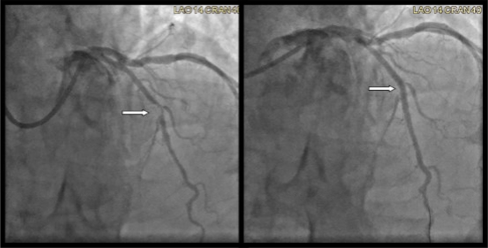
Điện tâm đồ ngày hôm sau cho thấy sóng T đảo ngược (TWI) tái tưới máu thành trước bên:

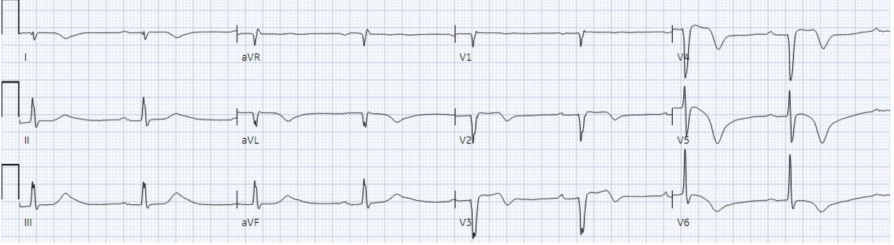
Thay đổi mô hình
Bệnh nhân may mắn vì đã
tái tưới máu tự phát hai lần, nhưng vẫn bị nhồi máu diện rộng. Dù nhiều dấu hiệu
điện tâm đồ của OMI bị bỏ sót, thời gian từ cửa đến phòng thông tim vẫn nhanh, vì tất cả
nhân viên y tế đều tập trung vào bệnh lý tắc động mạch vành cấp
và không bị phân tâm bởi việc thiếu tiêu chuẩn STEMI. Nhưng việc chăm sóc bệnh nhân này và những bệnh nhân khác lẽ ra đã
có thể tốt hơn nếu phát hiện OMI sớm hơn.
Ca này là ví dụ về những bước mà tất cả chúng ta
có thể làm trong thực hành hằng ngày khi mô hình chuyển từ STEMI sang OMI. Như Smith
và Meyers đã giải thích trong một bài viết năm 2020 trên EM
News:
“Chúng ta nên làm gì trong lúc vẫn còn mắc kẹt trong mô hình STEMI
ở thực hành hằng ngày? Thứ nhất, hãy bắt đầu dùng thuật ngữ giúp
hiểu biết của chúng ta tiến lên. Hãy bắt đầu dùng các thuật ngữ tắc động mạch vành cấp và
nhồi máu cơ tim do tắc. Thứ hai, hãy cân nhắc học thêm về điện tâm đồ trong OMI, đặc biệt là về
những đặc điểm ngoài ST chênh lên giúp chẩn đoán OMI.
Hãy học toàn bộ diễn tiến của các dấu hiệu điện tâm đồ của tắc và
tái tưới máu vốn đã bị che khuất khỏi chương trình đào tạo của bạn do mô hình
STEMI. Hãy theo dõi kết quả thông tim của bệnh nhân để biết ca nào là
dương tính giả hay ca tắc bị bỏ sót. Quan trọng nhất, trong khi chờ
mô hình thay đổi, hãy giữ trọng tâm vào mục tiêu thực sự cho bệnh nhân hội chứng vành cấp (ACS):
xác định và tái tưới máu cho bệnh nhân nhồi máu cơ tim do tắc cấp.”
Sự thay đổi mô hình này có thể được đẩy nhanh
nhờ AI được chuyên gia huấn luyện. Dưới đây là các điện tâm đồ do Queen of Hearts đọc:
Cả hai điện tâm đồ trước viện: OMI, độ tin cậy cao, vì vậy
bệnh nhân lẽ ra đã có thể được đưa thẳng vào phòng thông tim – tiết kiệm 2 giờ
thời gian tái tưới máu:

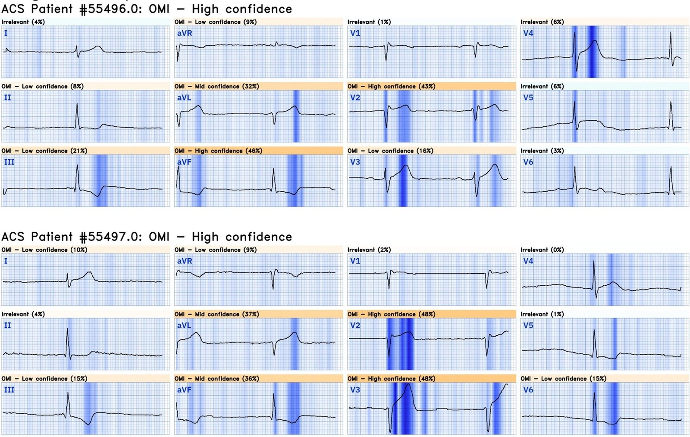
Điện tâm đồ đầu tiên: không phải OMI, độ tin cậy cao – nhưng trong
bối cảnh các điện tâm đồ trước đó, điều này cho thấy tái tưới máu tự phát có nguy cơ
tắc lại.

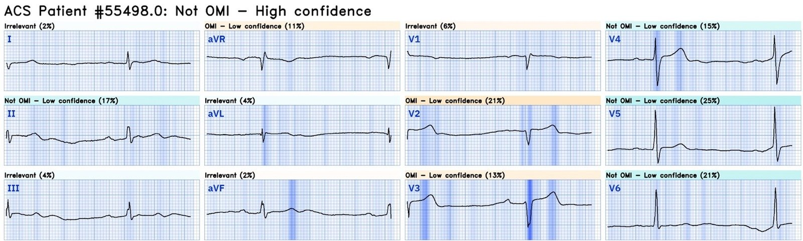
Các điện tâm đồ liên tiếp tại khoa cấp cứu: OMI, độ tin cậy cao – cả trong lúc
tắc lại lẫn khi tái tưới máu tự phát:

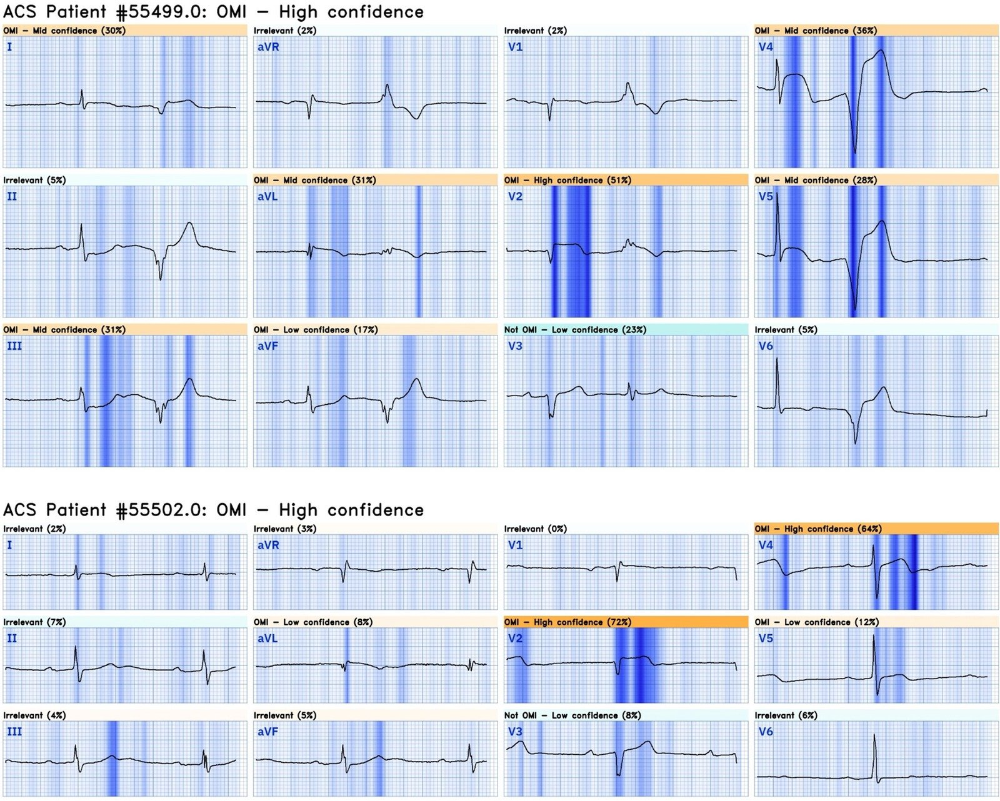
Bấm vào đây để đăng ký truy cập Queen of Hearts
Điều cần nhớ
1. OMI là một quá trình động
có thể dao động giữa tái tưới máu tự phát và tắc lại tự phát
2. các điện tâm đồ liên tiếp (bao gồm cả việc xem lại điện tâm đồ trước viện) là rất quan trọng
3. ‘STEMI thoáng qua’ có nguy cơ cao tắc lại
4. Hãy dùng thuật ngữ nhồi máu cơ tim do tắc (Occlusion MI), và tập trung vào tái tưới máu cho tắc động mạch vành cấp
5. Hãy học các dấu hiệu OMI thường bị bỏ sót
bởi tiêu chuẩn STEMI – bao gồm mất sóng R cấp, đoạn ST dạng lồi, sóng T
tối cấp, thay đổi soi gương, và PVC có đồng hướng hoặc ngược hướng quá mức
6. Queen of Hearts có thể cứu vớt cơ tim

===================================
BÌNH LUẬN CỦA TÔI, bởi KEN GRAUER, MD (11/8/2024):
===================================
Một phần thảo luận ca bệnh xuất sắc của BS. McLaren — ôn lại ngắn gọn cách đánh giá hiện đại nhất đối với các thay đổi trên các điện tâm đồ liên tiếp ở bệnh nhân tắc LAD cấp này, ca tắc đã tái tưới máu tự phát rồi tắc lại nhiều hơn một lần.
- Thời gian từ cửa đến phòng thông tim là dưới 2 giờ — nhanh so với nhiều ca được gửi đến chúng tôi, vì (theo BS. McLaren) — “Nhân viên y tế đã tập trung vào bệnh lý tắc động mạch vành cấp, và không bị phân tâm bởi việc thiếu tiêu chuẩn STEMI”.
- Thách thức còn lại là nhiệm vụ khó khăn xem xét hồi cứu những chi tiết có thể (và tối ưu là nên) giúp việc nhận diện và điều trị OMI còn được hợp lý hóa hơn nữa.
Vì BS. McLaren đã phân tích ca hôm nay rất thành thạo — tôi tập trung bình luận ngắn về 2 điện tâm đồ đầu tiên của đội cấp cứu ngoài viện (EMS) dưới góc độ đánh giá nhịp tim (Hình 1).
- Như nhiều bản ghi điện tâm đồ trước viện khác — thiếu dải nhịp chuyển đạo dài. Dù không ngăn cản việc đánh giá tổng thể ca này (OMI LAD cấp hiển nhiên rõ ràng) — việc thiếu dải nhịp chuyển đạo dài đặc biệt gây khó cho việc đọc nhịp trong những ca như hôm nay, khi chúng ta chỉ có 6 hoặc 7 nhát, với hình dạng QRS thay đổi và không chắc có sóng P hay không.
- Ở điện tâm đồ EMS #1 — Chúng ta biết có nhịp xoang ít nhất là từng lúc, vì dù hình dạng QRS của nhát #4 và 5 ở chuyển đạo V3 khác nhau — cả hai nhát này đều đi trước bởi sóng P xoang có vẻ bình thường với sóng P dương không đổi (và nhiều nhất chỉ hơi kéo dài) (các mũi tên ĐỎ thấy trước 2 nhát này ở cả V3 lẫn chuyển đạo V1 ghi đồng thời).
- Dù tôi nghi ngờ chỗ lệch dương rất nhỏ đi trước nhát #6 ở chuyển đạo V6 là một sóng P xoang khác với cùng khoảng PR — tôi không thấy dấu hiệu đáng tin cậy nào khác của sóng P xoang trên phần còn lại của bản ghi.
- Nhịp chậm đáng kể (tần số khoảng 40 lần/phút) — hiện diện suốt bản ghi. Vì không thấy dấu hiệu hoạt động nhĩ nào ở chuyển đạo II (là chuyển đạo tốt nhất để phát hiện hoạt động nhĩ nếu có nhịp xoang) — ta có thể nhanh chóng kết luận (như BS. McLaren đã làm) rằng không có nhịp “cố định” nào.
- Liệu có một dạng blốc AV độ 2 nào đó hay không (tức là câu hỏi tôi nêu về chỗ lệch dương rất nhỏ thấy giữa nhát #4 và 5) — hay đây đơn giản là “nhịp chậm xoang cạnh tranh với nhịp bộ nối” (như BS. McLaren mô tả) — là không quan trọng so với việc nhận ra rằng nhịp chậm đáng kể này là thêm một dấu hiệu nữa của OMI cấp đang diễn ra.
- Có thể đã cân nhắc dùng atropine liều thấp.
10 phút sau, ở điện tâm đồ EMS #2 — dấu hiệu hoạt động nhĩ thậm chí còn ít hơn.
- Dù “tiêu chuẩn” cho blốc AV độ 2 hoặc độ 3 không được thỏa mãn (vì không thấy nhịp nhĩ nào đáng tin cậy) — thông điệp quan trọng về lâm sàng đơn giản là sự hiện diện của nhịp chậm nặng, dai dẳng như một biểu hiện của OMI cấp đang diễn ra.

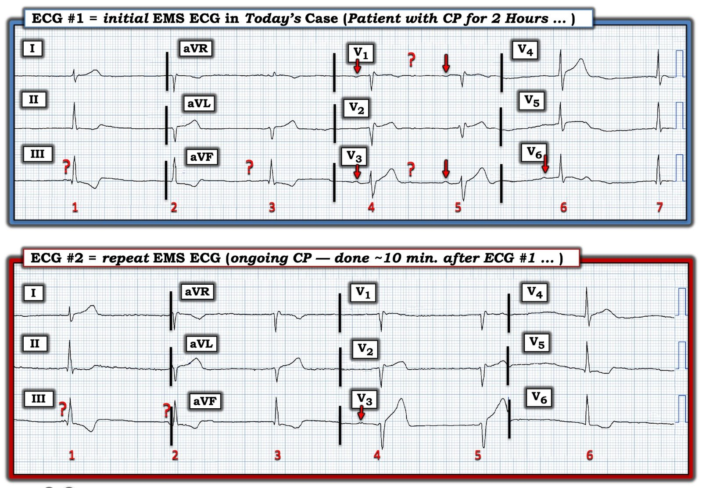
Nhận diện nhanh:
Theo BS. McLaren — Với bệnh sử đau ngực (CP) mới khởi phát ở bệnh nhân hôm nay, 2 điện tâm đồ EMS đã ngay lập tức chẩn đoán OMI LAD cấp, đáng được kích hoạt phòng thông tim ngay vào lúc đó. Để rõ ràng, trong Hình 2 — tôi làm nổi bật “đường đi của mắt tôi” trên 2 điện tâm đồ EMS đầu tiên này.
- Khi nhận ra nhịp chậm nặng, dai dẳng ở điện tâm đồ #1 — đoạn ST thẳng đuỗn có vẻ cấp tính kèm chênh lên ở chuyển đạo V2 — tiếp theo là các sóng T rõ ràng “quá đầy đặn” (hypervoluminous) ở chuyển đạo V3 và V4 giúp chẩn đoán tắc LAD đoạn gần trong vài giây.
- Chẩn đoán điện tâm đồ này được củng cố bởi sóng T tối cấp mất tương xứng rõ rệt ở chuyển đạo aVL.
- Mọi nghi ngờ đều bị xóa bỏ bởi ST chênh xuống soi gương ở các chuyển đạo thành dưới.
- So sánh cạnh nhau với điện tâm đồ EMS #2 ghi lại 10 phút sau — làm cho các thay đổi sóng ST-T “động” mà BS. McLaren mô tả trở nên rõ ràng.
Tóm lại: Tiến bộ thực sự trong ca hôm nay thể hiện ở việc các nhân viên y tế đồng loạt nhận ra mô hình OMI. Mục tiêu cần đạt bây giờ là thực hiện kích hoạt phòng thông tim trong vòng 10 phút, đó là toàn bộ thời gian cần để ghi 2 điện tâm đồ trước viện này.

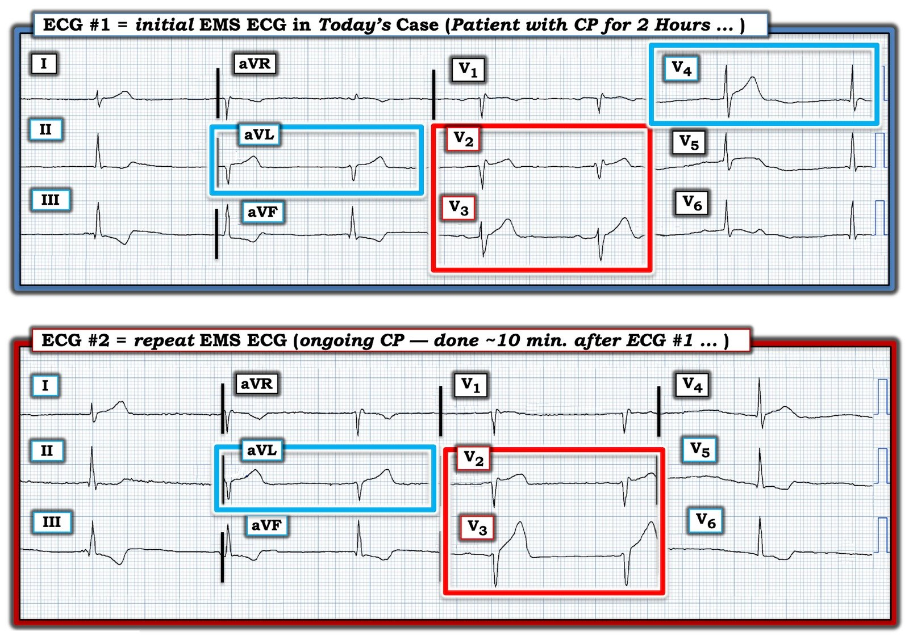